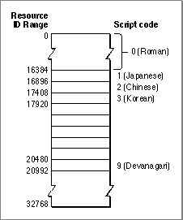

Legacy Document
Important: The information in this document is obsolete and should not be used for new development.
Important: The information in this document is obsolete and should not be used for new development.


How Script Systems Are Classified
Different kinds of script systems function differently. The previous section, "Components of a Script System," described the components of all script systems; this section describes the different ways of classifying script systems. The following section, "How Script Systems Work," describes how to use script systems for your text handling needs.Script systems are typed in general by the size of their character set and by their relative similarity to Roman. The Roman script system is used widely in North America, South America, Australia, Europe, and Africa, and in parts of Asia and Oceania. The Roman script system is standard on all Macintosh system software versions 4.1 and higher, but the Macintosh also supports all types of non-Roman script systems--simple or complex, and with small or large character sets.
Script systems are individually classified by code numbers. Resources associated with a script system have ID numbers that are related to the script's code. Languages and regional variations are subsets of script systems and have their own code numbers.
On an individual computer, more than one script system can be available at a time; different scripts are classified by their function. The most important script system is the system script; other script systems are secondary. The script system currently being used for text display is the font script; the script currently being used for text input is the keyboard script.
- Note
- Because the Roman script system is always installed, you can
always manipulate Roman text, no matter what other script
systems are present.
Types of Script Systems
Because of its historical support for the Roman writing system, and because Roman text layout is fairly simple, the Macintosh computer most easily supports script systems that are like Roman. Other script systems can add complications like right-to-left line direction, contextual character forms, and large character sets.As shown in Figure 1-32, script systems are divided into three groups, based on the size of their character set and their relative complexity compared to Roman:
Figure 1-32 Types of script systems
- The 1-byte simple script systems have character sets of 256 characters or fewer. They are called 1-byte because their character codes are one byte long. They are called simple because they are similar to Roman: they have a uniform left-to-right line direction and are noncontextual. The 1-byte simple script systems support variations within the Roman writing system and among Roman-like writing systems such as differences of character set, keyboard layout, sorting order, word boundaries, and the formatting of dates, times, and numbers. The 1-byte simple script systems include Roman, Greek, and Cyrillic.
- The 1-byte complex script systems also have character sets of 256 characters or fewer. They are complex because they may have left-to-right or right-to-left line direction, and may be contextual. The 1-byte complex script systems support the more difficult formatting required for bidirectional writing and the extensive use of ligatures, cursive fonts, character reordering, and other contextual features. The 1-byte complex script systems include Thai, Devanagari, Hebrew, and Arabic.
- The 2-byte script systems have character sets so large that most character codes
are two bytes long. The 2-byte script systems require sophisticated methods for character input, as well as an independent font mechanism for display and printing. The 2-byte script systems include Traditional Chinese, Simplified Chinese, Japanese, and Korean.
Figure 1-33 shows which parts of the Macintosh script management system are involved in handling text from the different types of script systems:
Figure 1-33 How the script management system handles different types of scripts
- Roman text is handled with code and resources largely built into system software.
- Text of 1-byte simple script systems is handled with the same built-in Roman code and resources, supplemented by minor additional resources such as alternate keyboard layouts and fonts.
- Text of 1-byte complex script systems is handled by WorldScript I, which may use, modify, or completely replace any of the built-in code. The complex 1-byte script systems may replace much of the Roman resources with their own international and keyboard resources and fonts.
- Text of 2-byte script systems is handled by WorldScript II, which may use, modify, or completely replace any of the built-in code. The 2-byte script systems may replace much of the Roman resources with their own international and keyboard resources and fonts; they also provide special input methods for text entry.
Script Codes, Language Codes, and Region Codes
The Macintosh script management system accommodates the international differences within writing systems by defining languages and regional variations for script systems, and organizing them into a classified hierarchy. Script systems are identified by script codes, languages by language codes, and regions by region codes. A spoken language that may be written in more than one writing system is treated on the Macintosh computer as several languages, each belonging to a different script system.Three general concepts underlie the hierarchy of script, language, and region.
Figure 1-34 illustrates the script, language, and region hierarchy. Note, for example, that the regions of France, Québec, and French Swiss are associated with the French language, which is part of the Roman script system.
- A script system is often differentiated by its character encoding, the specification of the characters that compose the writing system and their numeric representations. Different character encodings usually have different script codes. (This is not always true within the Roman script system; see "The Standard Roman Character Set" on page 1-54.)
- Each language belongs to a particular script system. Every language code thus implies a particular script code. Several languages may be associated with a single script system; in such a case, they share the same character set.
- A region code designates an area that may be smaller or larger than a single country (for example, French Swiss or Arabic), in which a specific variation of a single script system and language is used. Each region belongs to a particular language. Several regions may be associated with a single language. A region code typically represents a localized version of the system software for a particular language in a particular country or region.
Figure 1-34 The script, language, and region hierarchy
You can use language codes and region codes to specify multiple subsets of the international resources for a single script system. That way you can implement regional variations to a writing system without having to create an entirely new script system each time. See "Installing Modifications to a Script System" beginning on page 1-103.
See the chapter "Script Manager" in this book for a complete list of the constant names that define the codes for all scripts, languages, and regional versions.
Script Codes and Resource ID Numbers
Each script system is assigned a unique script code. The script codes currently defined are in the range 0-32, although the Script Manager can support 64 script systems at the same time. All the resources related to a script system, including its fonts, have resource ID numbers related in some way to the script ID:
Figure 1-35 illustrates the resource ID ranges for script systems with script codes between 0 and 32. The ranges for the Roman, Japanese, Chinese, Korean, and Devanagari scripts are noted. A full table of resource ID ranges is provided in the appendix "International Resources" in this book.
- The resource ID number for a script system's international bundle (
'itlb') resource is the same as the script code.- The resource ID numbers for most other resources associated with a script are in a range specific to that script. You can use these ID ranges to determine the script system associated with a font or other resource. Likewise, even when a font is missing, the Font Manager can use the ID range to substitute a font of the same script.
- For Roman (script code = 0), this range is 0-16383.
- Scripts with script codes in the range 1-32 have a range of 512 resource ID numbers each. For example, the script code for Japanese is 1, so Japanese resources can
have any of the first 512 ID numbers beyond the Roman range, that is, 16384-16895. The script code for Korean is 3, so Korean resources can have resource IDs in
the range 17408-17919.
Figure 1-35 Distinguishing scripts by resource ID range (for script codes 0-32)
- Note
- The Script Manager provides routines for determining the script system based on the value of a font family ID.

- IMPORTANT
- The special font designators 0 and 1, although in the range of the Roman script system, specify the Macintosh system font and application font, respectively; they do not necessarily indicate a Roman font and the Roman script system. See the section "Font Handling" beginning on page 1-60 for more information.

The System Script and Auxiliary Scripts
A script system may be installed either as an auxiliary script (also called a secondary script), which only provides support for a particular writing system, or as the system script (also called the primary script), which is the script system associated with the currently running version of Macintosh system software. The system script affects system defaults such as the default font, keyboard layout, and primary line direction. The system script defines which writing system is used for dialog boxes, menus, and alerts. Therefore, most text displayed by the Finder and other parts of the system is in the language of the system script.The system script is specified in the System file's international configuration (
'itlc') resource. All other script systems are secondary to the system script. In non-Roman versions of system software, Roman is an auxiliary script.Some versions of Macintosh system software, such as the Turkish or French, are simply variations of the U.S. system software (which includes the Roman script system). Their script system is a modified version of the standard U.S. Roman script system, and they do not include a second script system. When a non-Roman script system is installed, however, at least two script systems are always present. For example, the Japanese system software is a combination of U.S. system software and the Japanese script system, all of which are localized for Japan. Thus it contains both Roman and Japanese script systems.
Font Script and Keyboard Script
In every version of Macintosh system software, the system script is always enabled and is the principal script system for determining how text is presented and handled in the Finder and other parts of system software. But if there are auxiliary scripts present, the system script is not always the script system that controls text-handling.The text-manipulation and drawing routines in the Macintosh script management system work with individual character codes or strings of character codes, manipulating them or converting them to glyphs. A character code by itself carries no identifier as to what script system should be used to interpret it; the script management system uses other information to decide what script system to use for presenting or processing a given run of text.
Many of the routines use the script system associated with the font of the current graphics port to perform their tasks. The font is specified by the
txFontfield of the graphics port that is identified by the global variablethePort. The script system associated with that font is called the font script. Therefore, to manipulate text in a given script system, you typically first set the current port with a call to the QuickDrawSetPortprocedure, and then set the current font with a call to the QuickDrawTextFontprocedure, and then call the series of text-manipulation routines you need. (For those routines that take a script code as an explicit parameter, you need not set the current font before making the call.)Text input by the user involves the conversion of keypresses to character codes. Because every script system has its own character set, the character codes produced depend explicitly on the script system used for keyboard input. That script system is called the keyboard script. It is not automatically the same as the script used for display of text; your application must keep the keyboard script and the font script synchronized if characters are to be displayed correctly as they are typed in. Synchronization of the font script and keyboard script is further described on page 1-90 in this chapter and in the chapter "Script Manager" in this book.
- What is the "current" script?
- As just stated, the font script is usually the script system that is used by a script-aware text routine when the identity of the script or its resources is not an explicit parameter of the call. However, if the font script is not enabled, the routine uses the system script by default. Furthermore, some script-aware routines may use the system script instead of the font script, depending on the values of two Script Manager flags: the font force flag and the international resources selection flag.
- The font force flag, when
TRUE, specifies that fonts with ID numbers in the Roman range are to be considered as fonts of the system script rather than Roman fonts. The international resources selection flag, whenTRUE, specifies that resources of the system script are to be used by those Text Utilities routines that format dates, times, and numbers. The font force flag is supported only by some non-Roman 1-byte scripts for special purposes, and is typicallyFALSE. The international resources selection flag is typicallyTRUE.- The font force flag and the international resources selection flag are described in the chapter "Script Manager" in this book.